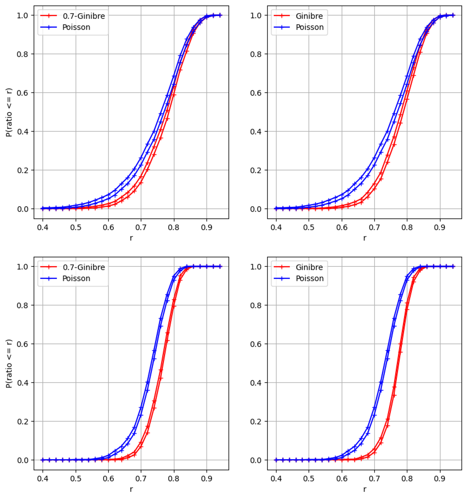

In numerous applications, cloud of points do seem to exhibit repulsion in the intuitive sense that there is no local cluster as in a Poisson process. Motivated by data coming from cellular networks, we devise a classification algorithm based on the form of the Voronoi cells. We show that, in the particular set of data we are given, we can retrieve some repulsiveness between antennas, which was expected for engineering reasons.
1 Introduction
In the performance analysis of cellular systems, the locations of antennas (or base stations) play a major role (see Baccelli and Błaszczyszyn (2008)). It is usually admitted that they can be modeled by a Poisson process. But the data which can be gathered from the Web site of the French National Agency of Radio Frequencies, Cartoradio, see ANFR (n.d.), tend to prove that this may not be the case. More precisely, if we look at the global picture of all antennas in Paris, we see features reminiscent of a Poisson process (local clusters for instance), see Figure 1 (left). However, if we look closer and finer, by specifying a region and a frequency band, we see that the antennas locations do seem to exhibit some repulsion (see Figure 1, right picture).
Figure 1: Left: Antennas in Paris. Right: Antennas in one frequency band only.
In previous papers, point processes with repulsion have been used to model such systems (Deng, Zhou, and Haenggi 2015; Miyoshi and Shirai 2016; Gomez et al. 2015) for no reason but a mere resemblance between the pictures like the right picture in {numref}paris-orange-fig and those obtained by simulating a point process with repulsion. The question is then to decide, given one sample of positions of base stations in a bounded domain, whether it is more likely to be modeled by a point process with repulsion or by a neutral point process, i.e. where the locations could be considered as coming from independent drawings of some identically distributed random variables. As we only have a single realization, we cannot use frequency methods. Since the observation window is finite, we cannot either resort to estimates based on stationarity or ergodicity and we must take care from the side effects.
The rationale behind our work comes from Goldman (2010). It is shown there that the Voronoi cells of the Ginibre point process (a particular point process with repulsion, see below for the exact definition) are in some sense more regular (closer to a circle) than those of a Poisson process (see Equation 3 in Theorem 1). By simulation, this feature seems to persist for other point processes with repulsion, like Gibbs processes. In Taylor et al. (2012), the surface of Voronoi cells is claimed to be a good discrepancy indicator between Poisson process and several processes with repulsion (Gibbs processes, Strauss processes with repulsion and the Geyer saturation model). For any of these models, we do not have any closed formula on the surface of the Voronoi cells so the procedure proposed in this paper is to simulate a large number of realizations of each of these processes and compute the empirical mean and variance of the Voronoi cells area. They obtain mixed conclusions as this sole indicator does not enable to rule out the Poisson hypothesis for many situations.
Our contribution is to consider the ratio of the surface by the squared perimeter instead of the surface of the Voronoi cells alone. Actually, we can interpret the result of Goldman (2010) by saying that the Voronoi cells of a Ginibre point process are more circular than those of a Poisson point process. The isoperimetric inequality stands for any regular enough domain in the plane, R = \frac{4 \pi S}{P^2} is less than 1 and the equality is obtained for disks. It is thus sensible to think that the ratio R will be closer to 1 for repulsive processes than for neutral point processes. Following the procedure of Taylor et al. (2012), we show that we get a much better indicator by using R instead S alone to discriminate between repulsive and neutral point processes.
However, for the application we have in mind, which is to decide for one single map which model is the most pertinent, we cannot use this criterion based on probability. That is why we resort to an ML model. After several tries, we concluded that the most efficient algorithm was to use Logistic Regression. In a first step, we trained it on simulations of Ginibre and Poisson point processes. The advantage of the Ginibre process is that we have efficient algorithm to simulate it (Laurent Decreusefond and Moroz 2021) and it does not seem to alter the accuracy of our algorithm to use one single class of repulsive point process. We remarked that we obtain a much better discrimination by considering the mean value of R for the five most central cells instead of just the most central one. We can even improve our discrimination rate by adding to the input vector the value of each of the five ratios.
Furthermore, the repulsion in the Ginibre class of point processes can be also modulated by making a \beta-thinning (to weaken the repulsion) and then a \sqrt{\beta}-dilation (to keep the same intensity of points per surface unit) to obtain what is called a \beta-Ginibre. For \beta=1, we have the original Ginibre process and when \beta goes to 0, it tends in law to a Poisson process (see L. Decreusefond and Vasseur (2015)) so that we have a full scale of point processes with intermediate repulsion between 0 and 1. We show that our logistic regression algorithm can still accurately discriminate between Poisson and \beta-repulsive point processes for \beta up to 0.7.
The paper is organized as follows. We first remind what is a Ginibre point process and the property of its Voronoi cells which motivates the sequel. Then two approaches are employed, one based on statistics and the other on machine learning, to classify the processes and compare their efficiencies and outcomes. Finally, tests are conducted on the Cartoradio data.
2 Preliminaries
We consider finite point processes on a bounded window E. The law of a such a point process N can be characterized by its correlation functions (for details we refer to Daley and Vere-Jones (2003, chap. 5)). These are symmetric functions (\rho_{k},k\ge 1) such that for any bounded function f, we can write:
Intuitively speaking, \rho_{k}(x_{1}, \dots, x_{k}) \, d x_{1} \dots d x_{k} represents the probability to observe in N, at least k points located around the point x_{j}. For a Poisson point process of control measure m(x) \, dx, we have
The Ginibre point process, restricted to E=B(0,r), with intensity \rho = \frac{\lambda}{\pi} (with \lambda > 0) has correlation functions (see L. Decreusefond, Flint, and Vergne (2015))
\rho_{k}(x_1, \dots, x_k) = \det(K(x_i, x_j), \; 1 \le i,j \le k)
\tag{1} where K is given by
K_r(x,y)=\sum_{j=1}^\infty \frac{\gamma(j+1,r^2)}{j!} \phi_j(x)\phi_j(\bar y)
\tag{2} with
\phi_j(x) = \sqrt{\frac{\rho}{\gamma(j+1,r^2)}} \left(\sqrt{\lambda} x \right)^j \, e^{-\frac{\lambda}{2} |x|^2}
and \gamma(n,x) is the lower incomplete Gamma function. The simulation of such a point process is a delicate matter, first solved in Hough et al. (2006). It remains costly because the algorithm contains complex calculations and some rejections. In order to fasten the procedure, an approximate algorithm, with error estimates, has been given in Laurent Decreusefond and Moroz (2021) (see the bibliography therein to get the URL of the Python code).
For an at most denumerable set of points \{x_{n}, \, n \ge 1\}, the Voronoi cells are defined as the convex sets
\mathcal{C}(x_{i})=\{z \in \mathbb{C},\ |z-x_{i}|\le |z-x_{j}| \text{ for all }j\neq i\}.
When the points are drawn from a point process, we thus have a collection of random closed sets. When the process under consideration is stationary with respect to translations, it is customary to define the typical law of a Voronoi cell as the law of the cell containing the origin of \mathbb{R}^{2} when the point process is taken under its Palm distribution (Goldman 2010; Baccelli and Błaszczyszyn 2009). It turns out that we know the Palm distribution of the Poisson process (which is itself) and of the Ginibre point process (the correlation functions are of the form Equation 1 with K being K_{R} with the first term removed). We denote by \mathcal{C}_p (respectively \mathcal{C}_{G}) the typical cell of the Voronoi tessellation associated to a stationary Poisson process in \mathbb{C} with intensity \lambda (respectively to the Ginibre point process of intensity \rho). One of the main theorems of Goldman (2010) is the following.
Theorem 1 When r \to 0,
\mathbb{E} \left[ V(\mathcal{C}_{G} \cap B(0,r)) \right] = \mathbb{E} \left[ V(\mathcal{C}_p \cap B(0,r)) \right] (1 + r^2 W + \circ(r^2))
\tag{3} where W is a positive random variable.
Theorem 1 shows that near the germs of the cells a more important part of the area is captured in the Ginibre–Voronoi tessellation than in the Poisson–Voronoi tessellation. This is an indication that the Voronoi cells of the Ginibre point process are more circular than those given by the Poisson process. This can be corroborated by simulation as shows Figure 2.
Figure 2: On the left, Voronoi cells associated to a realization of a Ginibre process. On the right, Voronoi cells associated to a realization of a Poisson process.
As we know that circles saturate the isoperimetric inequality, it is sensible to consider classification algorithms based on area and squared perimeter of Voronoi cells. In order to avoid side effects, we concentrate on the innermost cells of the observation window.
3 Classification of Cartoradio data
The Cartoradio web site contains the locations (in GPS coordinates) and other informations about all the antennas (or base stations) in metropolitan France for any operator, any frequency band and all generation of wireless systems (2G to 5G). The capacity of an antenna depends on its power and on the traffic demand it has to serve. Outside metropolitan areas, the antennas are relatively scarce and located along the main roads to guarantee a large surface coverage (around 30 km^2). Hence there is no need to construct models for these regions. On the contrary, in big towns, the density of base stations is much higher to handle the traffic demand: An antenna covers around half a squared kilometer. This is where the dimensioning problem do appear. One should have a sufficient number of antennas per unit of surface to transport all the traffic, on the other hand, base stations operating in a given frequency band cannot be to close to mitigate interference. This explains the right picture of Figure 1.
When it comes to assess the type of point process we should consider in this situation, we cannot consider the city as a whole: the geography (notably the Seine river in Paris, the parks, etc.), the non uniformity of demands (the traffic is heavier aroung railway stations or touristic sites, for instance) which entails a higher density of antennas, ruin any kind of invariance a statistician could hope for. For instance, the lack of homogeneity prevents the use of traditional repulsion criteria, such as pair correlation. That means, we should restrict our expectations to local models of the size of a district or a bit more. Since interference, which are the main annoyance to be dealt with, are a local phenomenon, working on a partial part of the whole domain is sufficient to predict the behavior and dimension a wireless network.
In the following sections, we will use Python code that assumes that the following packages have been loaded:
Hide/Show the code
import numpy as npimport pandas as pdimport scipy.statsfrom scipy.stats import bernoullifrom scipy.spatial import Voronoi, ConvexHullimport matplotlib.pyplot as pltimport seaborn as snsfont = {'family': 'serif', 'color': 'black', 'weight': 'normal', 'size': 11,}
3.1 Statistical approach
Given a circular domain with N points, we want to decide whether the points exhibit repulsion or not. To do so, we will begin with a statistical approach, where we will first calculate, for Poisson processes as well as for Ginibre and \beta-Ginibre processes, the probability that the ratio R = \frac{4 \pi S}{P^2} of the central cell is less than or equal to r, for values of r ranging from 0 to 1. And then we apply the same approach using the mean ratio of the five central cells. Finally, we will calculate 95% confidence intervals for each of these processes.
The following code illustrates the generation of various point samples and the calculation of the surface to squared perimeter ratios given the number of points N and the parameter \beta for \beta-Ginibre processes. The Ginibre and \beta-Ginibre processes are generated using the “sample” function given in the Python code of Laurent Decreusefond and Moroz (2021).
The simulation algorithm provides a method for computing the quantity \mathbb{P} \left( \frac{4 \pi S}{P^2} \le r \right) as a function of r for the Ginibre processes (the same algorithm is applied to other processes as well). The Algorithm takes as input the number of points N, the number of experiences for the simulation N_{exp} and the range of the variable r as a list of values. Since the simulations require a lot of time to run, we are not going to attach the associated Python code, the latter is based on the algorithm described in the following Python code using the functions defined previously.
Figure 3 shows the results of the simulations, where we compare the confidence intervals of the poisson process with the Ginibre process and the 0.7-Ginibre process, using first the central cell and then the five central cells.

Figure 3: Simulation results using the central cell (up) and the five central cells (down).
The limitation of the statistical approach using only the central cell is made visible by the presence of some overlap between the confidence intervals of the Poisson process and that of the 0.7-Ginibre process. Consequently, in specific cases, it may not be possible to determine the true nature of some processes based on this statistical test. On the other hand, if we average the ratio of the five most central cells (the cells whose centers are the closest to the origin), there is no longer an overlap among the various curves.
This approach shows that the chosen ratio variable represents a good repulsion criterion. On the other hand, our objective is to decide for a single map which model is the most pertinent, and that cannot be done by a frequentist approach. This is what motivated us to use a ML method.
3.2 Machine Learning approach
In this approach, we will use the same circular domain with N points as in the statistical approach. Since the repulsion is not sensitive to scaling, we normalize the radius to R=\sqrt{N}. This is due to the fact that a cloud drawn from a Ginibre point process of intensity 1 with N points occupies roughly a disk with this radius. We begin by generating the data of the Ginibre process, the 0.7-Ginibre process and the poisson process on which we will train the classification model, which is a Logistic Regression Classifier. Using only the central cell (respectively the five most central cells), the initial variables in our database consist of the surface and perimeter of the central cell (respectively surfaces and perimeters of the five central cells) of each generated sample, along with a binary variable that takes the value 1 if the process is repulsive and 0 otherwise. Subsequently, we add the ratio variable \frac{4 \pi S}{P^2} of the central cell (respectively the five ratios of the five central cells) to provide the classification model with additional information on which to base its predictions. The output of the classifier is a composite score based on some statistics of the point process, tuned to discriminate between a Poisson process and a repulsive point process.
As the generation of data requires considerable execution time, we will prepare the data locally (using the previous code), by generating, for each classification, a sample of 5000 observations (2500 repulsive and 2500 non-repulsive) of N = 50 points. Then we read them directly as follows:
Here is an example of the data created of configurations of 0.7-Ginibre and poisson processes with one cell:
Hide/Show the code
beta_ginibre_data_1.head()
S1
P1
R1
process
0
3.282609
6.851499
0.878735
1
1
3.229371
7.052515
0.815905
0
2
5.542461
9.335383
0.799187
1
3
3.409986
8.318448
0.619267
0
4
4.336329
8.748695
0.711944
1
Before starting the model’s training using the data generated, we will scale the data in order to avoir the concern of overfitting. Here is an example of the scaling of the previous data:
Hide/Show the code
b_ginibre_1 = beta_ginibre_data_1.copy()for col in beta_ginibre_data_1.columns[:-1]: b_ginibre_1[col] = (b_ginibre_1[col] - b_ginibre_1[col].mean()) / b_ginibre_1[col].std()ginibre_1 = ginibre_data_1.copy()for col in ginibre_data_1.columns[:-1]: ginibre_1[col] = (ginibre_1[col] - ginibre_1[col].mean()) / ginibre_1[col].std()b_ginibre_2 = beta_ginibre_data_2.copy()for col in beta_ginibre_data_2.columns[:-1]: b_ginibre_2[col] = (b_ginibre_2[col] - b_ginibre_2[col].mean()) / b_ginibre_2[col].std()ginibre_2 = ginibre_data_2.copy()for col in ginibre_data_2.columns[:-1]: ginibre_2[col] = (ginibre_2[col] - ginibre_2[col].mean()) / ginibre_2[col].std()b_ginibre_1.head()
S1
P1
R1
process
0
-0.290349
-0.584119
1.447490
1
1
-0.326183
-0.439422
0.661112
0
2
1.230698
1.203856
0.451857
1
3
-0.204615
0.471835
-1.800031
0
4
0.418882
0.781540
-0.640083
1
Now that the data is gathered, we will train the Logistic Regression model using the baseline model, i.e. all the hyperparameters’ values are taken as defaults, (a grid search can be used later in order to select the optimal hyperparameters). Other classification models (Random Forest, Support Vector Machine and XGBoost) have been tested but did not yield more significant results than the chosen classifier. We split each data to a train data and test data in order to see the model’s accuracy before testing it on the cartoradio data.
We can notice that our model’s accuracy when using the central cell is approximately 70\% for the Ginibre and Poisson processes classification. However, when considering the first five central cells, we achieve an accuracy of 85 \%, a result consistent with our statistical approach. This is because with the five cells, the model has access to more information about the nature of the sample, increasing the likelihood of successful sample classification by taking into account the surface areas and perimeters of the first five central cells.
3.3 Cartoradio data Tests
Cartoradio data is a set of configurations of some mobile phone base stations in Paris. The goal is to decide from the classification model already used, whether the configuration do present some repulsion. serait The initial data (positions of the antennas) cover a large area of the city of Paris (see Figure 4 (right)) With a real dataset, we often encounter the problem of heterogeneity between the different parts of the configurations since they depend on the topology of the space in which the antennas are placed.
To cope with this problem, we extract from each configuration a representative sample similar to the type of training data so that the tests make sense. Figure 4 (left) shows a sample extracted from a given configuration.
Figure 4: On the left, Initial cartoradio configuration. On the right, Sample extracted from it and scaled.
In the following, we read the cartoradio data directly from the “cartoradio_data.csv” file, then we add the variables that represent the ratio of the first five central cell and finally we scale the data. Here is the final (scaled) data on which we will test our model.
Here are the results of the tests on the cartoradio data using each model already trained, showing the classification value and its probability for each observation.
It can be noted that the classification results using only the central cell are not significant enough. This is largely due to the low accuracy of the model used with the central cell, which is normal since the data does not contain enough variables for the model’s training.
0.7-Ginibre Vs Poisson using the five central cell:
In contrast, the results found using the five central cells are much better, the majority of configurations are classified as repulsive. Regarding the configurations classified as non-repulsive by our model, we can say that this comes down to one of the following two reasons: - As long as we are dealing with real data, these samples may be a non-repulsive ones and the results are actually coherent. - It is sure that the accuracy of our models is high, but we may have some classification errors, which means that even if the configuration is repulsive, the model decides that it is not.
4 Conclusion
In this paper it has been shown numerically (based on the theoretical results in Goldman (2010)) that Voronoi cells represent an effective means for determining the nature of repulsion of a configuration (repulsive or not), and this by creating a database of various configurations and extracting the areas and perimeters of the Voronoi cells in order to use them as input to the classification model described earlier.
Once the model is trained and tested on the data created, it is tested after that on real data, which are the positions of a mobile phone base stations in Paris. Visually, we can easily say that these configurations are repulsive, which we have confirmed for the majority of these configurations by testing them by the previously trained model, especially the one classifying Ginibre and poisson processes using the first five central cells.
Baccelli, F., and B. Błaszczyszyn. 2008. “Stochastic Geometry and Wireless Networks: Volume I Theory.”Foundations and Trends in Networking 3 (34): 249–449. https://doi.org/10.1561/1300000006.
———. 2009. “Stochastic Geometry and Wireless Networks: Volume II Applications.”Foundations and Trends in Networking 4 (12): 1–312. https://doi.org/10.1561/1300000026.
Daley, D. J., and D. Vere-Jones. 2003. An Introduction to the Theory of Point Processes. Vol. I. Second. Probability and Its Applications (New York). Springer-Verlag, New York.
Decreusefond, Laurent, and Guillaume Moroz. 2021. “Optimal Transport Between Determinantal Point Processes and Application to Fast Simulation.”Mod. Stoch. Theory Appl. 8 (2): 209–37.
Decreusefond, L., I. Flint, and A. Vergne. 2015. “A Note on the Simulation of the Ginibre Point Process.”Journal of Applied Probability 52 (04): 1003–12. https://doi.org/10.1239/jap/1450802749.
Decreusefond, L., and A. Vasseur. 2015. “Asymptotics of Superposition of Point Processes.” In Geometry of Science Information. Palaiseau.
Deng, Na, Wuyang Zhou, and Martin Haenggi. 2015. “The Ginibre Point Process as a Model for Wireless Networks with Repulsion.”IEEE Transactions on Wireless Communications 14 (1). https://arxiv.org/abs/1401.3677v1.
Goldman, André. 2010. “The Palm Measure and the Voronoi Tessellation for the Ginibre Process.”The Annals of Applied Probability 20 (1): 90–128. https://doi.org/10.1214/09-AAP620.
Gomez, Jean-Sébastien, Aurélien Vasseur, Anaı̈s Vergne, Philippe Martins, Laurent Decreusefond, and Wei Chen. 2015. “A Case Study on Regularity in Cellular Network Deployment.”IEEE Wireless Communications Letters, IEEE, 2015, Pp.4, May. https://arxiv.org/abs/1505.06073v1.
Hough, J. B., M. Krishnapur, Y. Peres, and B. Virág. 2006. “Determinantal Processes and Independence.”Probability Surveys 3: 206–229 (electronic).
Miyoshi, Naoto, and Tomoyuki Shirai. 2016. “Spatial Modeling and Analysis of Cellular Networks Using the Ginibre Point Process: A Tutorial.”IEICE Transactions on Communications E99.B (11): 2247–55. https://doi.org/10.1587/transcom.2016nei0001.
Taylor, D. B., H. S. Dhillon, T. D. Novlan, and J. G. Andrews. 2012. “Pairwise Interaction Processes for Modeling Cellular Network Topology.” In Globecom. https://doi.org/10.1109/glocom.2012.6503831.
@article{adrat2024,
author = {Adrat, Hamza and Decreusefond, Laurent},
publisher = {Société Française de Statistique},
title = {Point {Process} {Discrimination} {According} to {Repulsion}},
journal = {Computo},
date = {2024-01-25},
url = {https://computo.sfds.asso.fr/published_202401_adrat_repulsion/},
doi = {10.57750/3r07-aw28},
issn = {2824-7795},
langid = {en},
abstract = {In numerous applications, cloud of points do seem to
exhibit *repulsion* in the intuitive sense that there is no local
cluster as in a Poisson process. Motivated by data coming from
cellular networks, we devise a classification algorithm based on the
form of the Voronoi cells. We show that, in the particular set of
data we are given, we can retrieve some repulsiveness between
antennas, which was expected for engineering reasons.}
}
For attribution, please cite this work as:
Adrat, Hamza, and Laurent Decreusefond. 2024. “Point Process
Discrimination According to Repulsion.”Computo,
January. https://doi.org/10.57750/3r07-aw28.
Source Code
---title: "Point Process Discrimination According to Repulsion"author: - name: Hamza Adrat corresponding: true email: hamza.adrat@um6p.ma url: https://www.linkedin.com/in/hamza-adrat/ orcid: 0009-0004-8155-3260 affiliations: - name: Mohammed VI Polytechnic University department: EMINES - School of Industrial Management url: https://www.emines-ingenieur.org/ - name: Laurent Decreusefond email: laurent.decreusefond@telecom-paris.fr url: https://perso.telecom-paris.fr/~decreuse orcid: 0000-0002-8964-0957 affiliations: - name: Telecom Paris department: Computer Science url: https://telecom-paris.frdate: 01/25/2024date-modified: last-modified# description: |# This document provides a template based on the [`quarto`](https://quarto.org/) system for contributions to Computo, using the [`quarto journal extension`](https://github.com/computorg/computo-quarto-extension), the Jupyter kernel (Python user) and `venv+pip` to set-up the dependencies.abstract: >+ In numerous applications, cloud of points do seem to exhibit *repulsion* in the intuitive sense that there is no local cluster as in a Poisson process. Motivated by data coming from cellular networks, we devise a classification algorithm based on the form of the Voronoi cells. We show that, in the particular set of data we are given, we can retrieve some repulsiveness between antennas, which was expected for engineering reasons.keywords: [classification, point process, repulsion]citation: type: article-journal container-title: "Computo" doi: "10.57750/3r07-aw28" url: https://computo.sfds.asso.fr/published_202401_adrat_repulsion/ publisher: "Société Française de Statistique" issn: "2824-7795"bibliography: references.bibgithub-user: computorgrepo: "published_202401_adrat_repulsion/"draft: false # set to false once the build is runninggoogle-scholar: truepublished: true # will be set to true once acceptedformat: computo-html: default computo-pdf: defaultjupyter: python3---## IntroductionIn the performance analysis of cellular systems, the locations of antennas (or base stations) play a major role (see @BaccelliStochasticGeometryWireless2008). It is usually admitted that they can be modeled by a Poisson process. But the data which can be gathered from the Web site of the French National Agency of Radio Frequencies, Cartoradio, see @ANFR, tend to prove that this may not be the case. More precisely, if we look at the global picture of all antennas in Paris, we see features reminiscent of a Poisson process (local clusters for instance), see @fig-paris-orange (left). However, if we look closer and finer, by specifying a region and a frequency band, we see that the antennas locations do seem to exhibit some repulsion (see @fig-paris-orange, right picture).:::{#fig-paris-orange}Left: Antennas in Paris. Right: Antennas in one frequency band only.:::In previous papers, point processes with repulsion have been used to model such systems [@Deng2014;@Miyoshi2016;@Gomez2015] for no reason but a mere resemblance between the pictures like the right picture in {numref}`paris-orange-fig` and those obtained by simulating a point process with repulsion. The question is then to decide, given one sample of positions of base stations in a bounded domain, whether it is more likely to be modeled by a point process with repulsion or by a *neutral* point process, i.e. where the locations could be considered as coming from independent drawings of some identically distributed random variables. As we only have a single realization, we cannot use frequency methods. Since the observation window is finite, we cannot either resort to estimates based on stationarity or ergodicity and we must take care from the side effects.The rationale behind our work comes from @goldman_palm_2010. It is shown there that the Voronoi cells of the Ginibre point process (a particular pointprocess with repulsion, see below for the exact definition) are in some sense more regular (closer to a circle) than those of a Poisson process (see @eq-theorem-goldman in @thm-goldman). By simulation, this feature seems to persist for other point processes with repulsion, like Gibbs processes. In @Taylor2012, the surface of Voronoi cells is claimed to be a good discrepancy indicator between Poisson process and several processes with repulsion (Gibbs processes, Strauss processes with repulsion and the Geyer saturation model). For any of these models, we do not have any closed formula on the surface of the Voronoi cells so the procedure proposed in this paper is to simulate a large number of realizations of each of these processes and compute the empirical mean and variance of the Voronoi cells area. They obtain mixed conclusions as this sole indicator does not enable to rule out the Poisson hypothesis for many situations.Our contribution is to consider the ratio of the surface by the squared perimeter instead of the surface of the Voronoi cells alone. Actually, we can interpretthe result of @goldman_palm_2010 by saying that the Voronoi cells of a Ginibre point process are more circular than those of a Poisson point process. The isoperimetric inequality stands for any regular enough domain in the plane, $R = \frac{4 \pi S}{P^2}$ is less than $1$ and the equality is obtained for disks. It is thus sensible to think that the ratio $R$ will be closer to $1$ for repulsive processes than for neutral point processes. Following the procedure of @Taylor2012, we show that we get a much better indicator by using $R$ instead $S$ alone to discriminate between repulsive and neutral point processes.However, for the application we have in mind, which is to decide for one single map which model is the most pertinent, we cannot use this criterion based on probability. That is why we resort to an ML model. After several tries, we concluded that the most efficient algorithm was to use Logistic Regression. In a first step, we trained it on simulations of Ginibre and Poisson point processes. The advantage of the Ginibre process is that we have efficient algorithm to simulate it [@MR4279876] and it does not seem to alter the accuracy of our algorithm to use one single class of repulsive point process. We remarked that we obtain a much better discrimination by considering the mean value of $R$ for the five most central cells instead of just the most central one. We can even improve our discrimination rate by adding to the input vector the value of each of the five ratios.Furthermore, the repulsion in the Ginibre class of point processes can be also modulated by making a $\beta$-thinning (to weaken the repulsion) and then a $\sqrt{\beta}$-dilation (to keep the same intensity of points per surface unit) to obtain what is called a $\beta$-Ginibre. For $\beta=1$, we have the original Ginibre process and when $\beta$ goes to $0$, it tends in law to a Poisson process (see @DecreusefondAsymptoticssuperpositionpoint2015) so that we have a full scale of point processes with intermediate repulsion between $0$ and $1$. We show that our logistic regression algorithm can still accurately discriminate between Poisson and $\beta$-repulsive point processes for $\beta$ up to $0.7$.The paper is organized as follows. We first remind what is a Ginibre point process and the property of its Voronoi cells which motivates the sequel. Then two approaches are employed, one based on statistics and the other on machine learning, to classify the processes and compare their efficiencies and outcomes. Finally, tests are conducted on the Cartoradio data.## PreliminariesWe consider finite point processes on a bounded window $E$. The law of a such a point process $N$ can be characterized by its correlation functions (fordetails we refer to @Daley2003[Chapter 5]). These are symmetric functions $(\rho_{k},k\ge 1)$ such that for any bounded function $f$, we can write:$$ \mathbb{E}\left[ \sum_{\alpha \subset N} f(\alpha) \right] = \sum_{k=1}^{+ \infty} \frac{1}{k!} \int_{E^k} f(\{x_1, \dots, x_k\}) \rho_{k}(x_1, \dots, x_k) \, d x_1 \dots d x_k .$$Intuitively speaking, $\rho_{k}(x_{1}, \dots, x_{k}) \, d x_{1} \dots d x_{k}$ represents the probability to observe in $N$, at least $k$ points located around thepoint $x_{j}$. For a Poisson point process of control measure $m(x) \, dx$, we have$$\rho_{k}(x_{1}, \dots, x_{k}) = \prod_{j=1}^{k} m(x_{j}).$$The **Ginibre point process**, restricted to $E=B(0,r)$, with intensity $\rho = \frac{\lambda}{\pi}$ (with $\lambda > 0$) has correlation functions (see @Decreusefond_2015)$$\rho_{k}(x_1, \dots, x_k) = \det(K(x_i, x_j), \; 1 \le i,j \le k)$$ {#eq-correlation_functions_determinantal}where $K$ is given by$$K_r(x,y)=\sum_{j=1}^\infty \frac{\gamma(j+1,r^2)}{j!} \phi_j(x)\phi_j(\bar y)$$ {#eq-main}with$$\phi_j(x) = \sqrt{\frac{\rho}{\gamma(j+1,r^2)}} \left(\sqrt{\lambda} x \right)^j \, e^{-\frac{\lambda}{2} |x|^2}$$and $\gamma(n,x)$ is the lower incomplete Gamma function. The simulation of such a point process is a delicate matter, first solved in @HoughDeterminantalprocessesindependence2006. It remains costly because the algorithm contains complex calculations and some rejections. In order to fasten the procedure, an approximate algorithm, with error estimates, has been given in @MR4279876 (see the bibliography therein to get the URL of the Python code).For an at most denumerable set of points $\{x_{n}, \, n \ge 1\}$, the Voronoi cells are defined as the convex sets$$\mathcal{C}(x_{i})=\{z \in \mathbb{C},\ |z-x_{i}|\le |z-x_{j}| \text{ for all }j\neq i\}.$$When the points are drawn from a point process, we thus have a collection of random closed sets. When the process under consideration is stationary with respect to translations, it is customary to define the typical law of a Voronoi cell as the law of the cell containing the origin of $\mathbb{R}^{2}$ when the point process is taken under its Palm distribution [@goldman_palm_2010; @BaccelliStochasticGeometryWireless2009]. It turns out that we know the Palm distribution of the Poisson process (which is itself) and of the Ginibre point process (the correlation functions are of the form @eq-correlation_functions_determinantal with $K$ being $K_{R}$ with the first term removed).We denote by $\mathcal{C}_p$ (respectively $\mathcal{C}_{G}$) the typical cell of the Voronoi tessellation associated to a stationary Poisson process in $\mathbb{C}$ withintensity $\lambda$ (respectively to the Ginibre point process of intensity $\rho$). One of the main theorems of @goldman_palm_2010 is the following.::: {#thm-goldman}When $r \to 0,$$$\mathbb{E} \left[ V(\mathcal{C}_{G} \cap B(0,r)) \right] = \mathbb{E} \left[ V(\mathcal{C}_p \cap B(0,r)) \right] (1 + r^2 W + \circ(r^2))$$ {#eq-theorem-goldman}where $W$ is a positive random variable.:::@thm-goldman shows that near the germs of the cells a more important part of the area is captured in the Ginibre–Voronoi tessellation than in the Poisson–Voronoi tessellation. This is an indication that the Voronoi cells of the Ginibre point process are more circular than those given by the Poisson process. This can be corroborated by simulation as shows @fig-voronoi.:::{#fig-voronoi}On the left, Voronoi cells associated to a realization of a Ginibre process. On the right, Voronoi cells associated to a realization of a Poisson process.:::As we know that circles saturate the isoperimetric inequality, it is sensible to consider classification algorithms based on area and squared perimeter of Voronoi cells. In order to avoid side effects, we concentrate on the innermost cells of the observation window.## Classification of Cartoradio dataThe Cartoradio web site contains the locations (in GPS coordinates) and other informations about all the antennas (or base stations) in metropolitan France for any operator, any frequency band and all generation of wireless systems (2G to 5G). The capacity of an antenna depends on its power and on the traffic demand it has to serve. Outside metropolitan areas, the antennas are relatively scarce and located along the main roads to guarantee a large surface coverage (around 30 km$^2$). Hence there is no need to construct models for these regions. On the contrary, in big towns, the density of base stations is much higher to handle the traffic demand: An antenna covers around half a squared kilometer. This is where the dimensioning problem do appear. One should have a sufficient number of antennas per unit of surface to transport all the traffic, on the other hand, base stations operating in a given frequency band cannot be to close to mitigate interference. This explains the right picture of @fig-paris-orange.When it comes to assess the type of point process we should consider in this situation, we cannot consider the city as a whole: the geography (notably the Seine river in Paris, the parks, etc.), the non uniformity of demands (the traffic is heavier aroung railway stations or touristic sites, for instance) which entails a higher density of antennas, ruin any kind of invariance a statistician could hope for. For instance, the lack of homogeneity prevents the use of traditional repulsion criteria, such as pair correlation. That means, we should restrict our expectations to local models of the size of a district or a bit more. Since interference, which are the main annoyance to be dealt with, are a local phenomenon, working on a partial part of the whole domain is sufficient to predict the behavior and dimension a wireless network.In the following sections, we will use Python code that assumes that the following packages have been loaded:```{python}import numpy as npimport pandas as pdimport scipy.statsfrom scipy.stats import bernoullifrom scipy.spatial import Voronoi, ConvexHullimport matplotlib.pyplot as pltimport seaborn as snsfont = {'family': 'serif', 'color': 'black', 'weight': 'normal', 'size': 11,}```### Statistical approachGiven a circular domain with $N$ points, we want to decide whether the points exhibit repulsion or not. To do so, we will begin with a statistical approach, where we will first calculate, for Poisson processes as well as for Ginibre and $\beta$-Ginibre processes, the probability that the ratio $R = \frac{4 \pi S}{P^2}$ of the central cell is less than or equal to $r$, for values of $r$ ranging from $0$ to $1$. And then we apply the same approach using the mean ratio of the five central cells. Finally, we will calculate $95$% confidence intervals for each of these processes.The following code illustrates the generation of various point samples and the calculation of the surface to squared perimeter ratios given the number of points $N$ and the parameter $\beta$ for $\beta$-Ginibre processes. The Ginibre and $\beta$-Ginibre processes are generated using the "sample" function given in the Python code of @MR4279876.```{python}def in_box(towers, bounding_box):return np.logical_and(np.logical_and(bounding_box[0] <= towers[:, 0], towers[:, 0] <= bounding_box[1]), np.logical_and(bounding_box[2] <= towers[:, 1], towers[:, 1] <= bounding_box[3]))def voronoi(towers, bounding_box, N):# Select towers inside the bounding box i = in_box(towers, bounding_box)# Mirror points points_center = towers[i, :] points_left = np.copy(points_center) points_left[:, 0] = bounding_box[0] - (points_left[:, 0] - bounding_box[0]) points_right = np.copy(points_center) points_right[:, 0] = bounding_box[1] + (bounding_box[1] - points_right[:, 0]) points_down = np.copy(points_center) points_down[:, 1] = bounding_box[2] - (points_down[:, 1] - bounding_box[2]) points_up = np.copy(points_center) points_up[:, 1] = bounding_box[3] + (bounding_box[3] - points_up[:, 1]) points = np.append(points_center, np.append(np.append(points_left, points_right, axis=0), np.append(points_down, points_up, axis=0), axis=0), axis=0)# Compute Voronoi vor = Voronoi(points) vor.filtered_points = points_center vor.filtered_regions = [vor.regions[vor.point_region[i]] for i inrange(len(points_center))]return vordef central_area_perim(vor):return ConvexHull(vor.vertices[vor.filtered_regions[0], :]).volume, ConvexHull(vor.vertices[vor.filtered_regions[0], :]).areadef area_perim(vor): area, perimeter = [], []for i inrange(5):iflen(vor.filtered_regions) >= i: area.append(ConvexHull(vor.vertices[vor.filtered_regions[i], :]).volume) perimeter.append(ConvexHull(vor.vertices[vor.filtered_regions[i], :]).area)else: area.append(np.mean(area)) perimeter.append(np.mean(perimeter))return area, perimeterdef ginibre(N, cells): radius = (np.sqrt(N)) ; precision =2**-53; error =False; quiet=True; output=None args = [radius, N, kernels['ginibre'], precision, error, quiet, output] sample_ginibre = sample(*args) X_ginibre, Y_ginibre = sample_ginibre.real, sample_ginibre.imag ginibre_points = np.array([X_ginibre, Y_ginibre]).T indices = np.argsort((ginibre_points[:,0])**2+ ((ginibre_points[:,1])**2)) ginibre_points = ginibre_points[indices] ginibre_vor = voronoi(ginibre_points, (-np.sqrt(N)-.1, np.sqrt(N)+.1, -np.sqrt(N)-.1, np.sqrt(N)+.1), len(ginibre_points))if cells==1: vor_area, vor_perim = central_area_perim(ginibre_vor)else: vor_area, vor_perim = area_perim(ginibre_vor)return vor_area, vor_perimdef beta_ginibre(N, beta, cells): radius = (np.sqrt(N)) ; precision =2**-53; error =False; quiet=True; output=None args = [radius, N, kernels['ginibre'], precision, error, quiet, output] sample_init = sample(*args) sample_beta_ginibre = sample_init*(bernoulli.rvs(beta, size=N)) sample_beta_ginibre = np.array([a for a in sample_beta_ginibre if a !=0])*(np.sqrt(beta)) X_beta_ginibre, Y_beta_ginibre = sample_beta_ginibre.real, sample_beta_ginibre.imag beta_ginibre_points = np.array([X_beta_ginibre, Y_beta_ginibre]).T indices = np.argsort((beta_ginibre_points[:,0])**2+ ((beta_ginibre_points[:,1])**2)) beta_ginibre_points = beta_ginibre_points[indices] beta_ginibre_vor = voronoi(beta_ginibre_points, (-np.sqrt(N*beta)-.1, np.sqrt(N*beta)+.1, -np.sqrt(N*beta)-.1, np.sqrt(N*beta)+.1),len(beta_ginibre_points))if cells==1: vor_area, vor_perim = central_area_perim(beta_ginibre_vor)else: vor_area, vor_perim = area_perim(beta_ginibre_vor)return vor_area, vor_perimdef poisson(N, cells): radius = np.sqrt(N) alpha =2* np.pi * scipy.stats.uniform.rvs(0,1,N) r = radius * np.sqrt(scipy.stats.uniform.rvs(0,1,N)) X_poisson, Y_poisson = r*np.cos(alpha), r*np.sin(alpha) poisson_points = np.array([X_poisson, Y_poisson]).T indices = np.argsort((poisson_points[:,0])**2+ ((poisson_points[:,1])**2)) poisson_points = poisson_points[indices] poisson_vor = voronoi(poisson_points, (-radius -.1, radius +.1, -radius -.1, radius +.1), len(poisson_points))if cells==1: vor_area, vor_perim = central_area_perim(poisson_vor)else: vor_area, vor_perim = area_perim(poisson_vor)return vor_area, vor_perimdef ratio_ginibre(N, cells): G = ginibre(N, cells)return np.mean(4*np.pi*np.array(G)[0]/(np.array(G)[1])**2)def ratio_beta_ginibre(N, beta, cells): beta_G = beta_ginibre(N, beta, cells)return np.mean(4*np.pi*np.array(beta_G)[0]/(np.array(beta_G)[1])**2)def ratio_poisson(N, cells): P = poisson(N, cells)return np.mean(4*np.pi*np.array(P)[0]/(np.array(P)[1])**2)%run -i Moroz_dpp.py```The simulation algorithm provides a method for computing the quantity $\mathbb{P} \left( \frac{4 \pi S}{P^2} \le r \right)$ as a function of $r$ for the Ginibre processes (the same algorithm is applied to other processes as well). The Algorithm takes as input the number of points $N$, the number of experiences for the simulation $N_{exp}$ and the range of the variable $r$ as a list of values. Since the simulations require a lot of time to run, we are not going to attach the associated Python code, the latter is based on the algorithm described in the following Python code using the functions defined previously.```{python}def simulation(N, N_exp, list_r): W_chap_ginibre, W_chap_poisson, W_chap_g7 = [], [], [] l_ginibre, l_poisson, l_g7 = [], [], []for i inrange(N_exp): l_ginibre.append(ratio_ginibre(N)) l_poisson.append(ratio_poisson(N)) l_g7.append(ratio_beta_ginibre(N, 0.7))for r in list_r: W_chap_ginibre.append((np.array(l_ginibre) <= r)*1) W_chap_poisson.append((np.array(l_poisson) <= r)*1) W_chap_g7.append((np.array(l_g7) <= r)*1) p_chap_ginibre = (np.array(W_chap_ginibre)).mean(axis=1) p_chap_poisson = (np.array(W_chap_poisson)).mean(axis=1) p_chap_g7 = (np.array(W_chap_g7)).mean(axis=1) sigma_chap_ginibre = (1.96)*np.sqrt(p_chap_ginibre*(1-p_chap_ginibre))/(np.sqrt(N_exp)) sigma_chap_poisson = (1.96)*np.sqrt(p_chap_poisson*(1-p_chap_poisson))/(np.sqrt(N_exp)) sigma_chap_g7 = (1.96)*np.sqrt(p_chap_g7*(1-p_chap_g7))/(np.sqrt(N_exp)) IC_ginibre_max, IC_ginibre_min = p_chap_ginibre + sigma_chap_ginibre, p_chap_ginibre + (-1)*sigma_chap_ginibre IC_poisson_max, IC_poisson_min = p_chap_poisson + sigma_chap_poisson, p_chap_poisson + (-1)*sigma_chap_poisson IC_g7_max, IC_g7_min = p_chap_g7 + sigma_chap_g7, p_chap_g7 + (-1)*sigma_chap_g7return [list_r, IC_ginibre_min, IC_ginibre_max, IC_poisson_min, IC_poisson_max, IC_g7_min, IC_g7_max]```@fig-simulation shows the results of the simulations, where we compare the confidence intervals of the poisson process with the Ginibre process and the $0.7$-Ginibre process, using first the central cell and then the five central cells.:::{#fig-simulation}{height=500}Simulation results using the central cell (up) and the five central cells (down).:::The limitation of the statistical approach using only the central cell is made visible by the presence of some overlap between the confidence intervals of the Poisson process and that of the $0.7$-Ginibre process. Consequently, in specific cases, it may not be possible to determine the true nature of some processes based on this statistical test. On the other hand, if we average the ratio of the five most central cells (the cells whose centers are the closest to the origin), there is no longer an overlap among the various curves.This approach shows that the chosen ratio variable represents a good repulsion criterion. On the other hand, our objective is to decide for a single map which model is the most pertinent, and that cannot be done by a frequentist approach. This is what motivated us to use a ML method.### Machine Learning approachIn this approach, we will use the same circular domain with $N$ points as in the statistical approach. Since the repulsion is not sensitive to scaling, we normalize the radius to $R=\sqrt{N}$. This is due to the fact that a cloud drawn from a Ginibre point process of intensity $1$ with $N$ points occupies roughly a disk with this radius. We begin by generating the data of the Ginibre process, the $0.7$-Ginibre process and the poisson process on which we will train the classification model, which is a Logistic Regression Classifier. Using only the central cell (respectively the five most central cells), the initial variables in our database consist of the surface and perimeter of the central cell (respectively surfaces and perimeters of the five central cells) of each generated sample, along with a binary variable that takes the value $1$ if the process is repulsive and $0$ otherwise. Subsequently, we add the ratio variable $\frac{4 \pi S}{P^2}$ of the central cell (respectively the five ratios of the five central cells) to provide the classification model with additional information on which to base its predictions. The output of the classifier is a composite score based on some statistics of the point process, tuned to discriminate between a Poisson process and a repulsive point process.```{python}def dataframe_1cell(N, observations): list_df = []for i inrange(observations): list_df.append(list(beta_ginibre(N, 0.7, cells=1)) + [1]) list_df.append(list(poisson(N, cells=1)) + [0]) df = pd.DataFrame(list_df, columns = ['S1', 'P1', 'process'])return dfdef data_1cell(N, observations): list_df = []for i inrange(observations): list_df.append(list(ginibre(N, cells=1)) + [1]) list_df.append(list(poisson(N, cells=1)) + [0]) df = pd.DataFrame(list_df, columns = ['S1', 'P1', 'process'])return dfdef dataframe_5cells(N, observations): list_df = []for i inrange(observations): list_df.append(sum(list(beta_ginibre(N, 0.7, cells=5)), []) + [1]) list_df.append(sum(list(poisson(N, cells=5)), []) + [0]) df = pd.DataFrame(list_df, columns = ['S1', 'S2', 'S3', 'S4', 'S5', 'P1', 'P2', 'P3', 'P4', 'P5', 'process'])return dfdef data_5cells(N, observations): list_df = []for i inrange(observations): list_df.append(sum(list(ginibre(N, cells=5)), []) + [1]) list_df.append(sum(list(poisson(N, cells=5)), []) + [0]) df = pd.DataFrame(list_df, columns = ['S1', 'S2', 'S3', 'S4', 'S5', 'P1', 'P2', 'P3', 'P4', 'P5', 'process'])return df```As the generation of data requires considerable execution time, we will prepare the data locally (using the previous code), by generating, for each classification, a sample of $5000$ observations ($2500$ repulsive and $2500$ non-repulsive) of $N = 50$ points. Then we read them directly as follows:```{python}beta_ginibre_data_1 = pd.read_csv('data/beta_ginibre_1cell.csv', sep=',')ginibre_data_1 = pd.read_csv('data/ginibre_1cell.csv', sep=',')beta_ginibre_data_2 = pd.read_csv('data/beta_ginibre_5cells.csv', sep=',')ginibre_data_2 = pd.read_csv('data/ginibre_5cells.csv', sep=',')```Here is an example of the data created of configurations of $0.7$-Ginibre and poisson processes with one cell:```{python}beta_ginibre_data_1.head()```Before starting the model's training using the data generated, we will scale the data in order to avoir the concern of overfitting. Here is an example of the scaling of the previous data:```{python}b_ginibre_1 = beta_ginibre_data_1.copy()for col in beta_ginibre_data_1.columns[:-1]: b_ginibre_1[col] = (b_ginibre_1[col] - b_ginibre_1[col].mean()) / b_ginibre_1[col].std()ginibre_1 = ginibre_data_1.copy()for col in ginibre_data_1.columns[:-1]: ginibre_1[col] = (ginibre_1[col] - ginibre_1[col].mean()) / ginibre_1[col].std()b_ginibre_2 = beta_ginibre_data_2.copy()for col in beta_ginibre_data_2.columns[:-1]: b_ginibre_2[col] = (b_ginibre_2[col] - b_ginibre_2[col].mean()) / b_ginibre_2[col].std()ginibre_2 = ginibre_data_2.copy()for col in ginibre_data_2.columns[:-1]: ginibre_2[col] = (ginibre_2[col] - ginibre_2[col].mean()) / ginibre_2[col].std()b_ginibre_1.head()```Now that the data is gathered, we will train the Logistic Regression model using the baseline model, i.e. all the hyperparameters' values are taken as defaults, (a grid search can be used later in order to select the optimal hyperparameters). Other classification models (Random Forest, Support Vector Machine and XGBoost) have been tested but did not yield more significant results than the chosen classifier. We split each data to a train data and test data in order to see the model's accuracy before testing it on the cartoradio data.```{python}from sklearn.pipeline import make_pipelinefrom sklearn.preprocessing import StandardScalerfrom sklearn.linear_model import LogisticRegressionfrom sklearn.model_selection import train_test_splitfrom sklearn.metrics import confusion_matrix, classification_report, roc_curve, roc_auc_score# Useful function for evaluating our model:def model_Evaluate(model, x_tt, y_tt): y_pred = model.predict(x_tt)print(classification_report(y_tt, y_pred)) cf_matrix = confusion_matrix(y_tt, y_pred) categories = ['Negative','Positive'] group_names = ['True Neg','False Pos', 'False Neg','True Pos'] group_percentages = ['{0:.2%}'.format(value) for value in cf_matrix.flatten() / np.sum(cf_matrix)] labels = [f'{v1}\n{v2}'for v1, v2 inzip(group_names,group_percentages)] labels = np.asarray(labels).reshape(2,2) logit_roc_auc = roc_auc_score(y_tt, model.predict(x_tt)) fpr, tpr, thresholds = roc_curve(y_tt, model.predict_proba(x_tt)[:,1]) fig = plt.figure(figsize=(12, 5))# Adds subplot on position 1 ax = fig.add_subplot(121) sns.heatmap(cf_matrix, annot = labels, cmap ='Blues',fmt ='', xticklabels = categories, yticklabels = categories) ax.set_title("Confusion Matrix", fontdict = font) ax.set(xlabel='Predicted values', ylabel='Actual values')# Adds subplot on position 2 ax = fig.add_subplot(122) ax.plot(fpr, tpr, label='area = %0.2f'% logit_roc_auc) ax.plot([0, 1], [0, 1],'r--', label='Standard') ax.set_xlim([-0.02, 1.02]) ax.set_ylim([0.0, 1.05]) thresholds_rounded = [round(num, 1) for num in thresholds]for threshold in [0.1, 0.2, 0.3, 0.4, 0.5, 0.6, 0.7, 0.8, 0.9]:if threshold in thresholds_rounded: index = thresholds_rounded.index(threshold) ax.annotate(threshold, (fpr[index], tpr[index])) ax.set_title('Receiver Operating Characteristic (ROC)', fontdict = font) ax.set(xlabel='False Positive Rate (1-specificity)', ylabel='True Positive Rate (sensitivity)') ax.legend(loc="lower right") ax.grid() plt.show()```Here are the results of the classification using each data:- $0.7$-Ginibre Vs Poisson using the central cell:```{python}beta_X1 = b_ginibre_1[['S1', 'P1', 'R1']].valuesbeta_y1 = b_ginibre_1['process'].valuesbeta_X1_train, beta_X1_test, beta_y1_train, beta_y1_test = train_test_split(beta_X1, beta_y1, test_size=0.3, shuffle=True, random_state=7)beta_LR1 = make_pipeline(StandardScaler(), LogisticRegression())beta_LR1.fit(beta_X1_train, beta_y1_train)model_Evaluate(beta_LR1, beta_X1_test, beta_y1_test)```- Ginibre Vs Poisson using the central cell:```{python}X1 = ginibre_1[['S1', 'P1', 'R1']].valuesy1 = ginibre_1['process'].valuesX1_train, X1_test, y1_train, y1_test = train_test_split(X1, y1, test_size=0.3, shuffle=True, random_state=7)LR1 = make_pipeline(StandardScaler(), LogisticRegression())LR1.fit(X1_train, y1_train)model_Evaluate(LR1, X1_test, y1_test)```- $0.7$-Ginibre Vs Poisson using the five central cells:```{python}beta_X2 = b_ginibre_2[['S1', 'P1', 'R1', 'S2', 'P2', 'R2', 'S3', 'P3', 'R3', 'S4', 'P4', 'R4', 'S5', 'P5', 'R5']].valuesbeta_y2 = b_ginibre_2['process'].valuesbeta_X2_train, beta_X2_test, beta_y2_train, beta_y2_test = train_test_split(beta_X2, beta_y2, test_size=0.3, shuffle=True, random_state=7)beta_LR2 = make_pipeline(StandardScaler(), LogisticRegression())beta_LR2.fit(beta_X2_train, beta_y2_train)model_Evaluate(beta_LR2, beta_X2_test, beta_y2_test)```- Ginibre Vs Poisson using the five central cells:```{python}X2 = ginibre_2[['S1', 'P1', 'R1', 'S2', 'P2', 'R2', 'S3', 'P3', 'R3', 'S4', 'P4', 'R4', 'S5', 'P5', 'R5']].valuesy2 = ginibre_2['process'].valuesX2_train, X2_test, y2_train, y2_test = train_test_split(X2, y2, test_size=0.3, shuffle=True, random_state=7)LR2 = make_pipeline(StandardScaler(), LogisticRegression())LR2.fit(X2_train, y2_train)model_Evaluate(LR2, X2_test, y2_test)```We can notice that our model's accuracy when using the central cell is approximately $70\%$ for the Ginibre and Poisson processes classification. However, when considering the first five central cells, we achieve an accuracy of $85 \%$, a result consistent with our statistical approach. This is because with the five cells, the model has access to more information about the nature of the sample, increasing the likelihood of successful sample classification by taking into account the surface areas and perimeters of the first five central cells.### Cartoradio data TestsCartoradio data is a set of configurations of some mobile phone base stations in Paris. The goal is to decide from the classification model already used, whether the configuration do present some repulsion.seraitThe initial data (positions of the antennas) cover a large area of the city of Paris (see @fig-cartoradio (right))With a real dataset, we often encounter the problem of heterogeneity between the different parts of the configurations since they depend on the topology of the space in which the antennas are placed.To cope with this problem, we extract from each configuration a representative sample similar to the type of training data so that the tests make sense. @fig-cartoradio (left) shows a sample extracted from a given configuration.:::{#fig-cartoradio}On the left, Initial cartoradio configuration. On the right, Sample extracted from it and scaled.:::In the following, we read the cartoradio data directly from the "cartoradio_data.csv" file, then we add the variables that represent the ratio of the first five central cell and finally we scale the data. Here is the final (scaled) data on which we will test our model.```{python}cartoradio = pd.read_csv('data/cartoradio_data.csv', sep=',')cartoradio['R1'] =list(4*np.pi*cartoradio.A1/(cartoradio.P1)**2)cartoradio['R2'] =list(4*np.pi*cartoradio.A2/(cartoradio.P2)**2)cartoradio['R3'] =list(4*np.pi*cartoradio.A3/(cartoradio.P3)**2)cartoradio['R4'] =list(4*np.pi*cartoradio.A4/(cartoradio.P4)**2)cartoradio['R5'] =list(4*np.pi*cartoradio.A5/(cartoradio.P5)**2)cartoradio.rename(columns={'A1': 'S1', 'A2': 'S2', 'A3':'S3', 'A4':'S4', 'A5':'S5'}, inplace=True)cartoradio = cartoradio[['S1', 'P1', 'R1', 'S2', 'P2', 'R2', 'S3', 'P3', 'R3', 'S4', 'P4', 'R4', 'S5', 'P5', 'R5']]cartoradio_scaled = cartoradio.copy()for col in cartoradio.columns[:-1]: cartoradio_scaled[col] = (cartoradio_scaled[col] - cartoradio_scaled[col].mean()) / cartoradio_scaled[col].std()cartoradio_scaled_1 = cartoradio_scaled[['S1', 'P1', 'R1']]cartoradio_scaled.head()```Here are the results of the tests on the cartoradio data using each model already trained, showing the classification value and its probability for each observation.- $0.7$-Ginibre Vs Poisson using the central cell:```{python}print('Classification results:', beta_LR1.predict(np.array(cartoradio_scaled_1)))print('Classification probabilities:\n', beta_LR1.predict_proba(np.array(cartoradio_scaled_1)))```- Ginibre Vs Poisson using the central cell:```{python}print('Classification results:', LR1.predict(np.array(cartoradio_scaled_1)))print('Classification probabilities:\n', LR1.predict_proba(np.array(cartoradio_scaled_1)))```It can be noted that the classification results using only the central cell are not significant enough. This is largely due to the low accuracy of the model used with the central cell, which is normal since the data does not contain enough variables for the model's training.- $0.7$-Ginibre Vs Poisson using the five central cell:```{python}print('Classification results:', beta_LR2.predict(np.array(cartoradio_scaled)))print('Classification probabilities:\n', beta_LR2.predict_proba(np.array(cartoradio_scaled)))```- Ginibre Vs Poisson using the five central cell:```{python}print('Classification results:', LR2.predict(np.array(cartoradio_scaled)))print('Classification probabilities:\n', LR2.predict_proba(np.array(cartoradio_scaled)))```In contrast, the results found using the five central cells are much better, the majority of configurations are classified as repulsive. Regarding the configurations classified as non-repulsive by our model, we can say that this comes down to one of the following two reasons:- As long as we are dealing with real data, these samples may be a non-repulsive ones and the results are actually coherent.- It is sure that the accuracy of our models is high, but we may have some classification errors, which means that even if the configuration is repulsive, the model decides that it is not.## ConclusionIn this paper it has been shown numerically (based on the theoretical results in @goldman_palm_2010) that Voronoi cells represent an effective means for determining the nature of repulsion of a configuration (repulsive or not), and this by creating a database of various configurations and extracting the areas and perimeters of the Voronoi cells in order to use them as input to the classification model described earlier.Once the model is trained and tested on the data created, it is tested after that on real data, which are the positions of a mobile phone base stations in Paris. Visually, we can easily say that these configurations are repulsive, which we have confirmed for the majority of these configurations by testing them by the previously trained model, especially the one classifying Ginibre and poisson processes using the first five central cells.

![]()